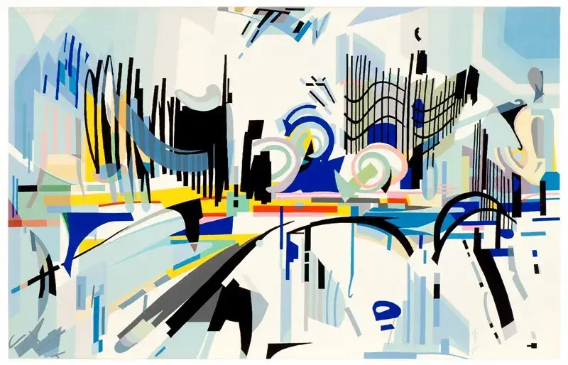
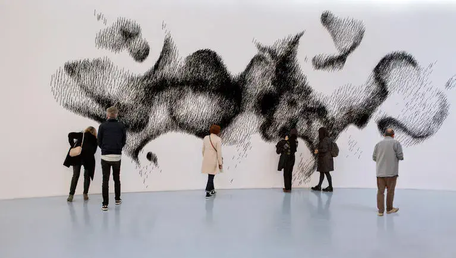
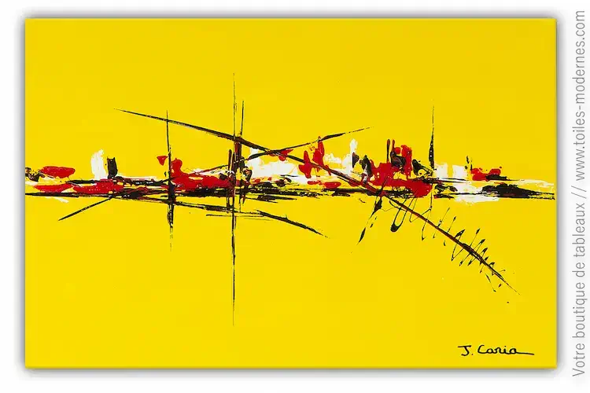
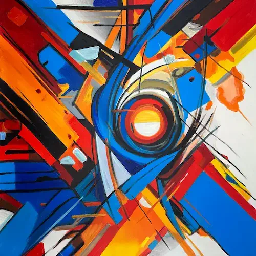
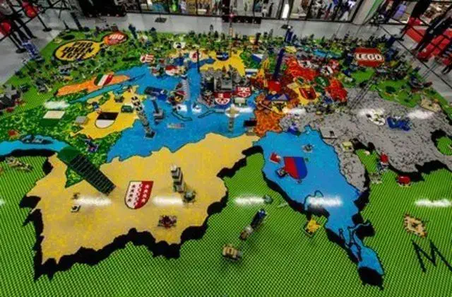
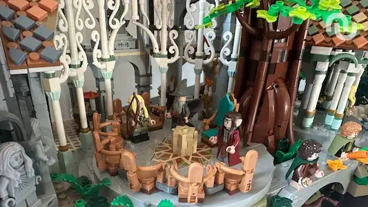
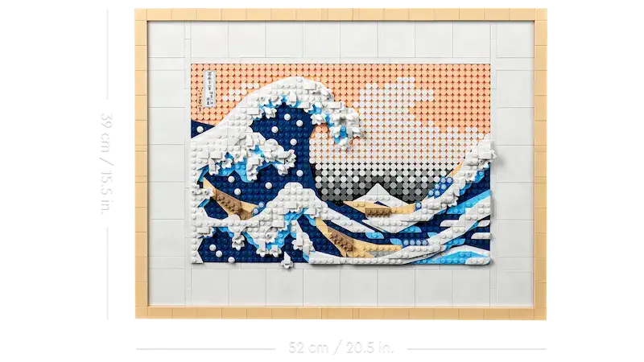
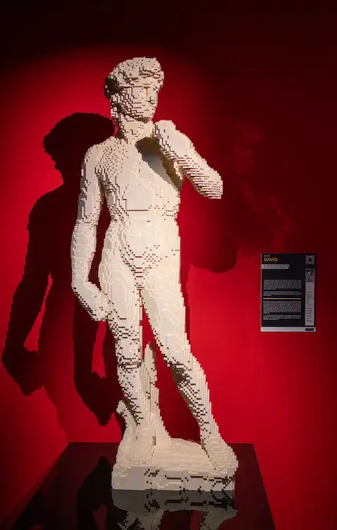
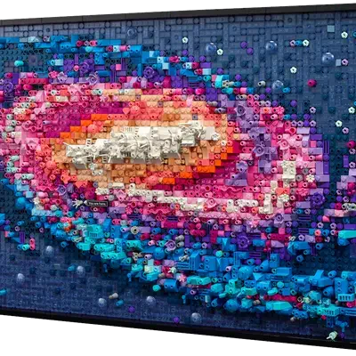
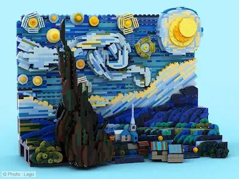

Vivez un voyage
inoubliable


Entre le Rhône et le Parc de la Tête d’Or, le Musée d’art contemporain de Lyon (macLYON) est le lieu de tous les imaginaires. Conçu par Renzo Piano et inauguré en 1995, le lieu est à vivre et à expérimenter à chaque nouvelle exposition. Audace, contemplation, expérimentation, autant de leitmotivs qui font du macLYON un musée unique dans la ville !

Plus d'informations surmac-lyon.com




L’univers
fantastique à votre
service

Jouets de construction fabriqués par le groupe danois The Lego Group, une société privée basée à Billund se composant de briques en plastique emboîtables, de figurines et de diverses autres pièces.

Plus d'informations surLEGO.com


“Ramenez l’art à la
maison” : Build’Art,
la collaboration
expansible !

Build’Art est une collaboration exceptionnelle et unique entre le Musée d’Art Contemporain de Lyon et la marque de jouets connue LEGO. Cette collaboration est née pour réinventer l’accès l’art avec un air de renouveau auprès des jeunes. Mettant en oeuvre des expositions aux concepts atypiques et activités interactives, Build’Art permet d’établir une nouvelle porte d’entrée à l’art et la culture aux plus jeunes !




